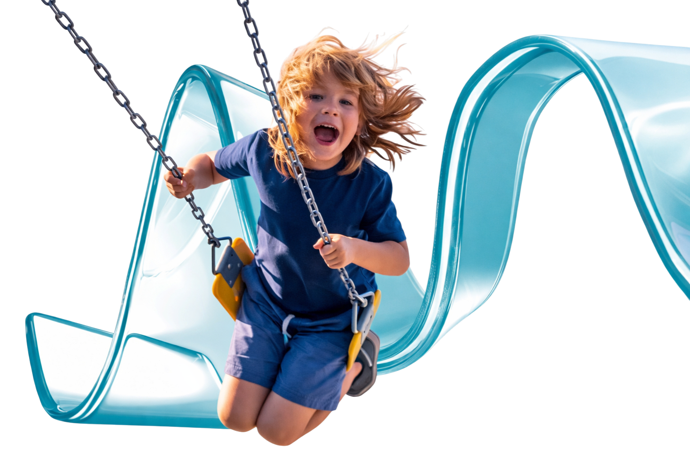

Nosso ecossistema pedagógico integrado vai além e é estruturado em 3 pilares exclusivos:

INTELIGÊNCIA CURRICULAR
Transforma cada etapa do aprendizado em unidades claras, mensuráveis e evolutivas, o que garante uma visão real do progresso individual e coletivo.
CULTURA DA EVOLUÇÃO
O progresso do estudante nasce de pequenas conquistas, que fortalecem confiança, autorregulação e autonomia.
Pensa
Processos cognitivos
Sente e se regula
Socioemocional

Aprende e progride
Desempenho pedagógico
Reage ao mundo
Autonomia e propósito

MENOS TELA, MAIS TECNOLOGIA
Inteligência humana e algoritmos podem coexistir para revelar aspectos essenciais do desenvolvimento: ritmos, avanços, dificuldades e dimensões socioemocionais.
Usa IA pedagógica
Nosso Tutor IA é treinado em ambiente educacional para estimular pensamento, oferecer orientações e ampliar o repertório do estudante.
É aliada do educador
Potencializa o trabalho docente e amplia o olhar pedagógico sem substituir o professor, sustentando decisões com evidências.
Conecta papel e digital
Integra material impresso e recursos digitais com microtestes e dados para tornar visível o que importa e orientar intervenções.